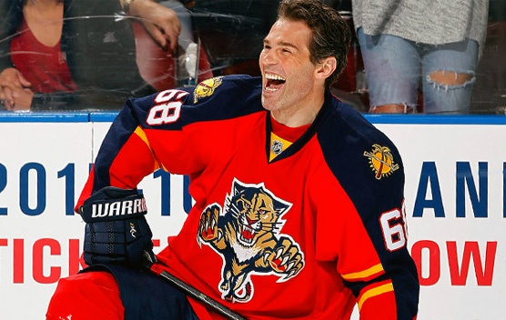

Dne 26. února 2015 byl Jágr vyměněn z New Jersey do týmu Florida Panthers za volbu ve 2. kole draftu 2015 a podmíněnou volbu ve 3. kole draftu 2016. Kromě Floridy projevilo zájem o kladenského rodáka ještě šest jiných týmů. Generální manažer Panthers Dale Tallon se k přestupu vyjádřil následovně: „Jsme ti, co nakupují. Chceme vítězit a získávat trofeje. Dáváme dohromady jednotlivé kousky skládačky, jdeme krok po kroku. Doufáme, že Jaromír dovede náš tým do země zaslíbené“, následně ještě dodal: „Já bych ho chtěl vidět hrát za náš klub ještě rok nebo i dva. Jeho fyzička je nadále perfektní.“ Sám Jágr se k přestupu vyjádřil jasně: „Nemám problém s tím, že je to Florida. Každý zápas je kritický, hraje se o play-off. Ale i tohle patří k naší práci, beru to zase jako další výzvu.“ Na Floridě dohrál zbytek sezóny, po boku mladých útočníků Huberdeaua a Barkova začal sbírat body a pomohl týmu přiblížit se k pozicím pro postup do play off, kam se ovšem Panthers nedostali. Hned po skončení základní části se s týmem dohodl na nové roční smlouvě.
Dařilo se mu i v následujícím ročníku, v něm byl s 27 góly a 39 asistencemi nejproduktivnějším hráčem Floridy a zároveň nejlepším českým hokejistou sezóny. I díky jeho příspěvku se Florida probojovala do play off (teprve podruhé od roku 2000), kde narazila na New York Islanders. V něm však nenavázal na výkony předchozích týdnů a zaznamenal pouze dvě asistence. Ani týmu se příliš nedařilo a Panthers nakonec podlehli Islanders v prvním kole 2:4 na zápasy. O necelé dva týdny později oznámil nový, opět roční kontrakt s Floridou se základním platem 4 miliony dolarů. V červnu 2016 byl za svoji oddanost hokeji oceněn Bill Masterton Memorial Trophy, což byla jeho první individuální cena v NHL od roku 2006.
V další sezoně 2016/2017 se Jaromíru Jágrovi zpočátku nedařilo bodově prosadit, ale to se během několika zápasů změnilo. Dne 23. prosince 2016 se díky asistenci proti Bostonu osamostatnil na druhém místě historického pořadí kanadského bodování NHL. Český křídelník tak zaznamenal 1888. bod v kariéře (755+1133) a překonal Marka Messiera. Po sezóně, ve které získal 46 bodů, mu vypršela roční smlouva s Floridou a i přes ohlášená jednání nedošlo k jejímu obnovení. Dne 1. července 2017 se stal volným hráčem a následně generální manažer klubu Dale Tallon zveřejnil, že Jágr už na Floridě pokračovat nebude.
